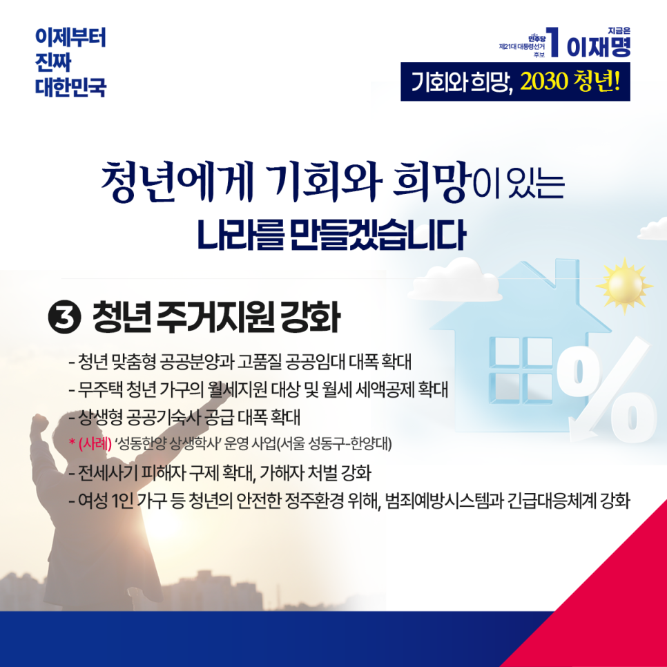

← 메인으로 돌아가기
이재명 대통령후보 정책모음
[청년]
카카오톡으로 공유하기

청년에게 기회와 희망이 있는 나라를 만들겠습니다
지금 우리 사회 청년들이 겪는 어려움은 단지 개인의 문제가 아닙니다. 사회 전반의 기회 부족이 만든 구조적 위기입니다. 청년이 마음껏 일하고, 자산을 키우며, 걱정 없이 살 수 있도록 기회를 만들겠습니다.
청년이 힘겹게 오늘을 버티는 힘을, 희망찬 내일의 설계에 쓸 수 있도록 길을 열겠습니다. 어느 세대보다 미래가 불확실한 시대, 청년들이 불안을 딛고 일어설 수 있도록 함께하겠습니다.
첫째, 청년의 자산 형성을 돕겠습니다.
청년내일채움공제시즌2 (가칭‘청년미래적금’)를 도입하고, 청년들의 요구에 맞추어 제도개선도 적극적으로 추진하겠습니다.
가상자산 현물 ETF를 도입하고, 통합감시시스템을 구축해 안전한 가상자산 투자 환경을 조성하겠습니다. 거래 수수료 인하도 유도하겠습니다.
청년 맞춤형 재무상담 프로그램을 도입해 기초 진단과 전문가 상담 등으로 안정적인 자산 형성을 돕겠습니다.
둘째, 청년의 일할 권리를 강화하고, 더 많은 기회를 만들겠습니다.
구직활동지원금을 확대하고, 자발적 이직 청년에게는 생애 1회 구직급여 지급을 추진하겠습니다.
글로벌 기업이 운영 중인 ‘채용 연계형 직업 교육 프로그램’이 더 많은 기업으로 확산되도록 국가가 적극 지원하겠습니다.
고용 형태나 계약 명칭과 무관하게 일하는 모든 청년이 공정한 보상과 안전한 노동환경, 충분한 사회보장을 누릴 수 있게 하겠습니다.
군 복무경력이 모든 공공기관에서 정당하게 인정받도록, 의무적으로 호봉에 반영될 수 있게 하겠습니다.
셋째, 청년 주거지원을 강화하겠습니다.
청년 맞춤형 공공분양과 고품질 공공임대를 대폭 늘려, 주거 불안을 덜겠습니다.
무주택 청년 가구의 월세 지원 대상을 넓히고, 월세 세액공제도 확대하겠습니다.
성동구-한양대 반값 기숙사처럼, 상생형 공공기숙사를 대폭 공급해, 주거비 부담을 낮추고 안정된 생활 기반을 마련하겠습니다.
전세사기특별법을 개정해 피해자 구제를 확대하고, 가해자 처벌도 강화하겠습니다. 임대시장 감독을 강화해 불공정 행위를 뿌리 뽑겠습니다.
여성 1인 가구를 상대로 한 범죄 예방을 포함해 청년의 안전한 정주 환경을 위해 범죄예방 시스템과 긴급대응체계를 강화하겠습니다.
넷째, 청년 생활 안전망을 더 촘촘하고 든든하게 만들겠습니다.
청년 맞벌이 부부가 언제든 안심하고 아이를 맡길 수 있도록 맞춤형 돌봄 지원을 확대하겠습니다.
청년의 국민연금 생애 첫 보험료는 국가가 지원하고, 군복무 크레딧은 복무기간 전체로 확대하겠습니다.
취업 후 상환 학자금 대출의 소득 요건을 완화하고, 이자 면제 대상도 확대해 청년의 학자금 부담을 줄이겠습니다.
은둔 청년, 자립 준비 청년, 가족돌봄 청년들이 우리 사회의 당당한 일원으로 살아갈 수 있도록 지원 체계를 강화하겠습니다.
청년이 직면한 다양한 문제를 이겨내려면 국가가 먼저 움직여야 합니다. 청년에게 기회를 주는 사회는 성장하지만, 청년을 방치한 사회는 퇴보합니다. 모든 청년이 공정한 기회를 누리고, 내일을 꿈꿀 수 있어야 합니다.
이재명이 대한민국 청년의 문제를 풀어가겠습니다.
이제부터 진짜 대한민국
지금은 이재명입니다.